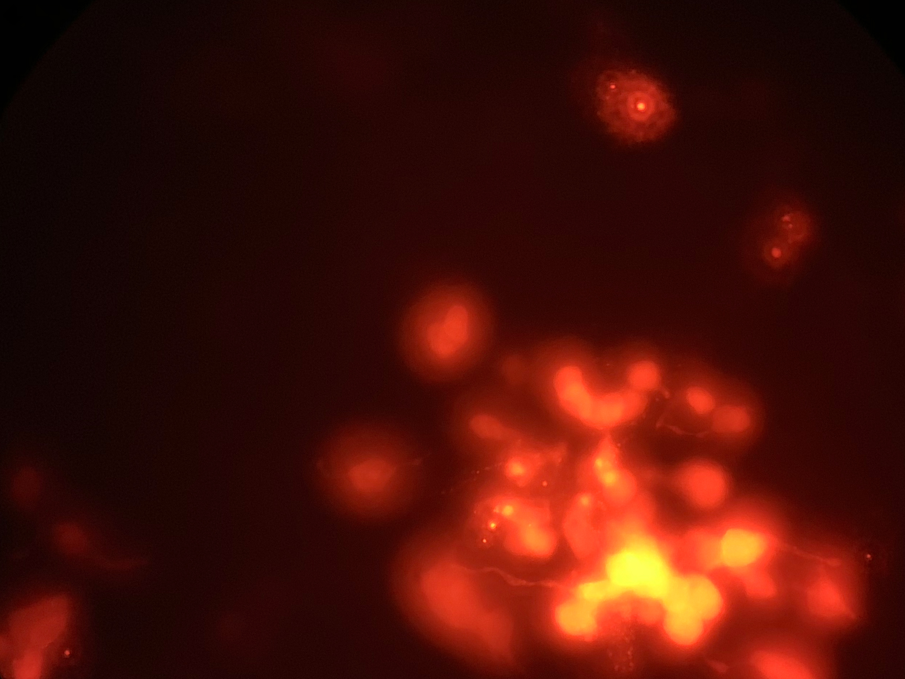

Heather Dewey-Hagborg - 2020
Material: retrovirus
What if love could spread like a virus?
In Lovesick I worked in a collaboration with research scientists at Integral Molecular, a biotechnology company specialized in antibody discovery, to create a custom retrovirus which infects its human host with a gene that increases the production of oxytocin. The hormone oxytocin is implicated in feelings of love and bonding, monogamy and devotion, and the promotion of empathy and connection. The work is envisioned as an activist intervention, to spread affection and attachment and to combat the alienation and hate of the present. It is my imagined solution to our post-Trump, post-Brexit crisis.
I designed small glass vials to contain the virus, shaped like different energy states of the oxytocin molecule, that can be broken open and consumed orally. The form expresses the uniqueness of what the person is about to do, and in referencing the style of a cyanide capsule, also conveys the gravity and irreversibility of the act.
The installation consists of the vials of glowing virus, video of the microscopic cells expressing their infection, and a piece of music based on a 14th century ballad by Francesco Landini that tells the story of a woman struggling with a love that is in vain. I have re-written the song to list instead the letters representing the proteins contained in the oxytocin molecule.
Love, from us, to you.
All residents have the choice to be infected with this virus in our optimal living rooms. We believe that this can help reduce the stress and anxiety of our residents from living in a closed space for a very long time.
This artwork plays a key role in our exhibition since it deals with the topic of emotions and feelings. This global pandemic has impacted our mental health in a way that is not negligible, and we believe that this artwork can help spread affection and empathy and improve the connection between our community members, despite living separately.
Dr. Heather Dewey-Hagborg is an artist and biohacker who is interested in art as research and technological critique. Her controversial biopolitical art practice includes the project Stranger Visions in which she created portrait sculptures from analyses of genetic material (hair, cigarette butts, chewed up gum) collected in public places.